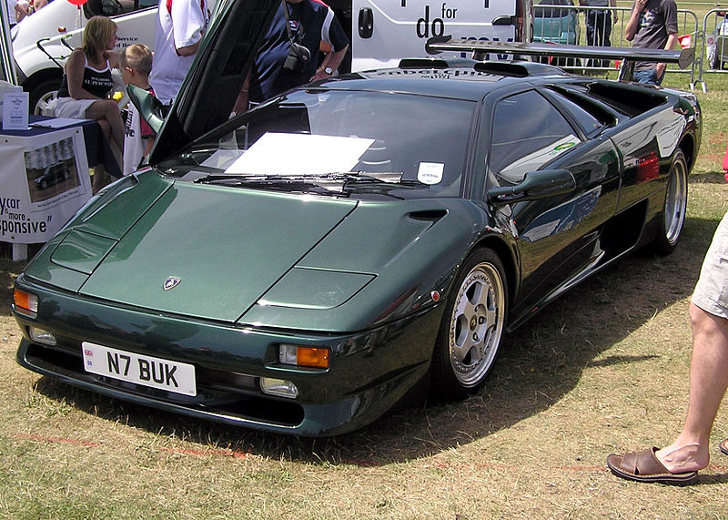

WEBCARS
Diablo
El Lamborghini Diablo es un automóvil superdeportivo de 2 puertas biplaza, que fue construido por el fabricante de automóviles italiano Lamborghini entre los años 1990 y 2001. Se trata del segundo modelo desarrollado por la casa boloñesa de una saga de superdeportivos que tuvieron su origen en el Lamborghini Countach de 1974 y del cual hereda sus principales características físicas, como la disposición central-trasera de su motor o la apertura de sus "puertas de tijera".